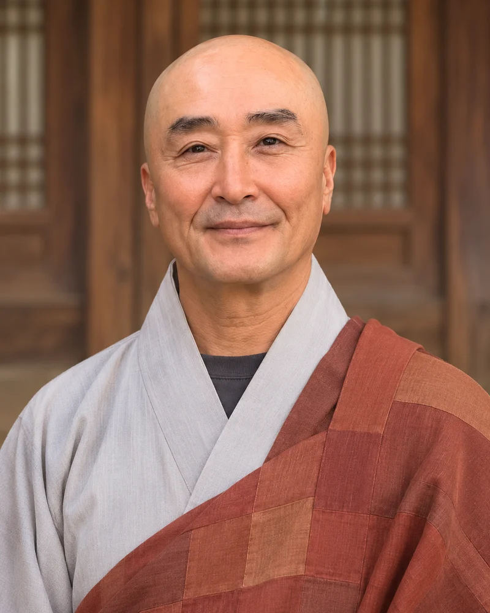

A welcome from our abbot
주지 스님 인사말

반갑습니다. 대한불교조계종 여래사 주지 승원 인사드립니다.
세상에 아프지 않은, 또 아파보지 않았던 중생이 어디 있겠습니까. 먼 이국땅에서 각자의 삶의 무게를 짊어지고 살아가다 보면, 누구나 가슴 한구석에 묵직한 멍울 하나쯤 품고 살아가기 마련입니다.
저에게 부처님의 법문은 누군가를 훈계하거나 설득하는 고상한 이야기가 아닙니다. 아픈 이들이 가슴속에 맺힌 끄트머리를 풀어낼 수 있도록 곁에 자리를 내어주고, 제 쓰린 경험과 공명하며 그 아픔을 함께 훑어 내리는 일입니다. 비전을 제시할 만큼 수행력이 높지 않더라도, 우는 이들과 같이 울어주는 것. 그것이 제가 생각하는 가장 진실한 수행이자 해결책입니다.
1980년 창건 이래 40여 년간 북가주 한인 불자님들의 든든한 의지처가 되어온 우리 여래사는, 앞으로도 거창한 가르침을 앞세우기보다 여러분의 이야기를 들어주는 '명고수'가 되고자 합니다.
고민이 있을 때, 혹은 그저 누군가에게 속마음을 털어놓고 싶을 때 언제든 여래사를 찾아주십시오. 설득하려 하지 않고, 다그치지 않으며, 그저 여러분의 삶에 따뜻한 추임새를 넣어드리며 함께 울고 웃겠습니다.
부처님의 자비로운 시선 속에서 여러분의 지친 마음이 조금이나마 쉬어갈 수 있기를 기원합니다.
성불하십시오.
대한불교조계종 여래사 주지 승 원 합장
Read the English translation
Welcome. I am Seungwon, the abbot of YeoLaiSah, a temple of the Jogye Order of Korean Buddhism.
Who among us has never known pain? Living far from home and carrying the weight of our own lives, many of us hold a quiet ache somewhere in our hearts.
For me, the Buddha’s teachings are not lofty words meant to lecture or persuade. They are a way to make room beside us so those who are hurting can begin to loosen what has knotted inside, and to meet their pain with the memory of our own. Even if my practice is not deep enough to point a way forward, I can still weep with those who weep. To me, that is the most honest practice and the truest response.
Since its founding in 1980, YeoLaiSah has been a source of support for Korean Buddhists in Northern California for more than forty years. Rather than putting grand teachings first, we hope to be like a skilled drummer who listens closely to the singer and accompanies them with care.
Whenever something is weighing on you, or you simply want someone to hear what’s in your heart, please come to YeoLaiSah. We won’t try to persuade or hurry you. We will offer a warm word of encouragement and share in your tears and laughter.
May your weary heart find a little rest under the compassionate gaze of the Buddha.
May you attain Buddhahood.
With palms joined, Seungwon, Abbot of YeoLaiSah, Jogye Order of Korean Buddhism